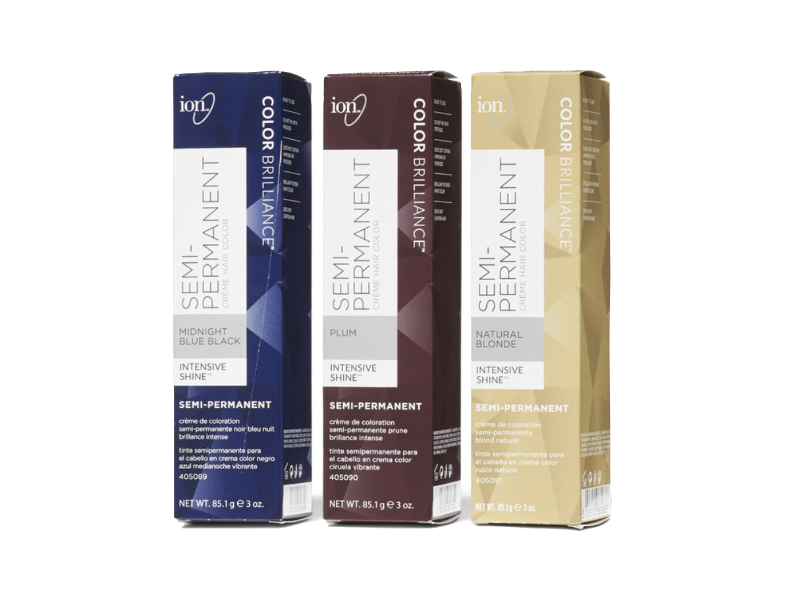
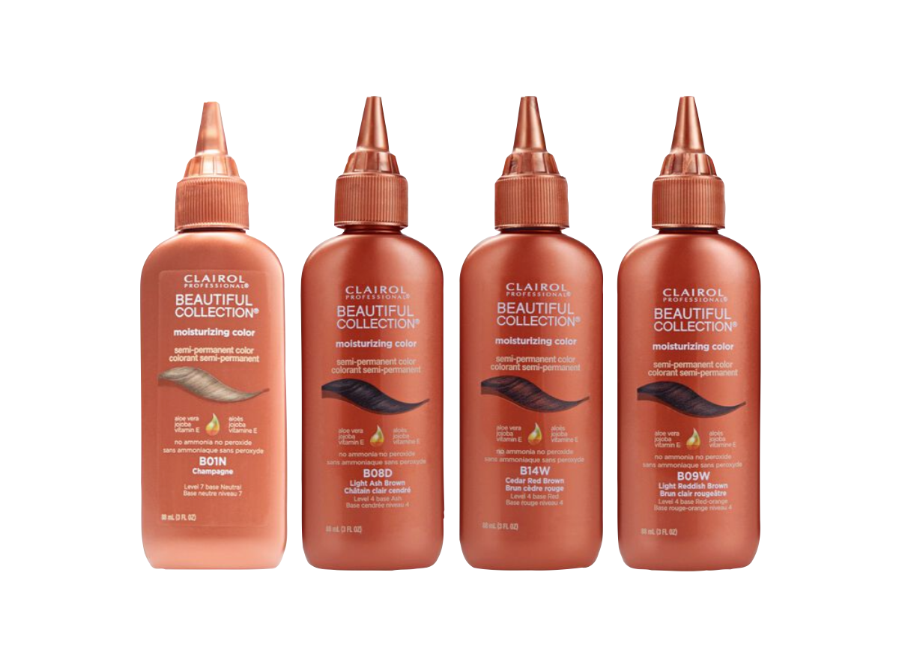
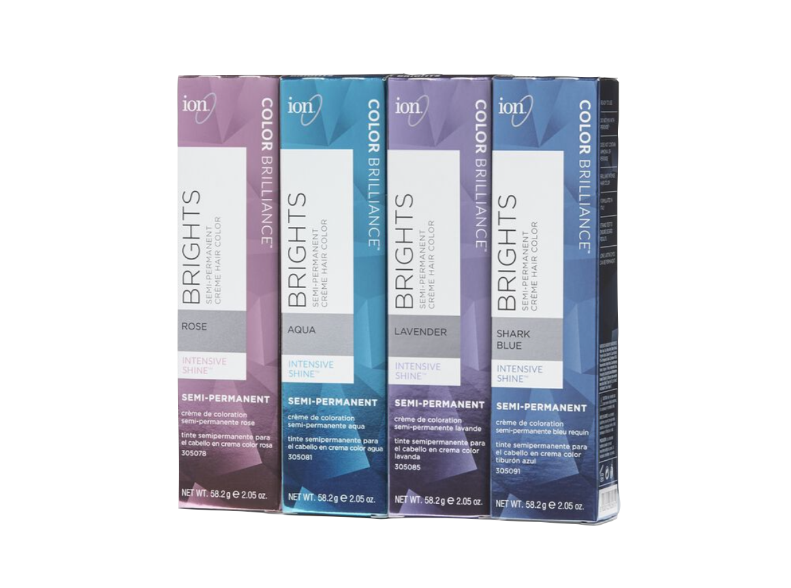
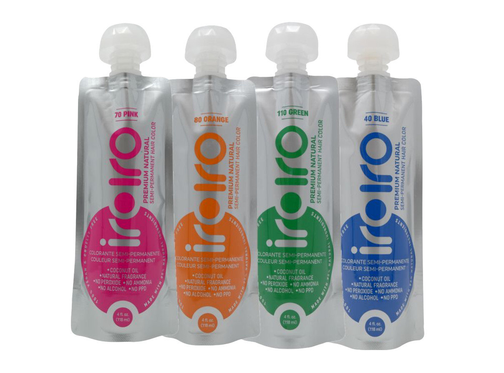
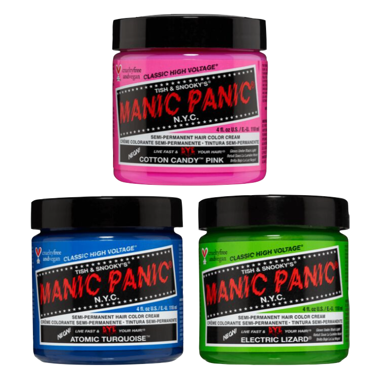

Semi-Permanent colors are essentally a stain for the hair. Not used with developer, the process does not lift the cuticle, but rather clings to that layer. These colors can last anywhere from 1 to 2 weeks, depending on the level the hair is
at the time of application. Colors can range from natural (black, dark brown, etc) to fashion (pink, blue, etc.) When trying to acheive a fashion color, you may need to lighten your hair prior to color application to acheive the vibrancy you
would like. It is possible to put Semi-Permanent dye onto darker hair, but the outcome is usually more of a hue added on top of the pre-existing color.
Hair Color
home